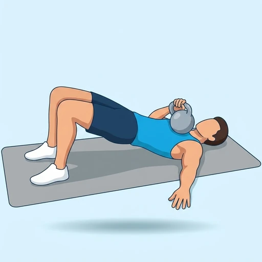

One Arm Kettlebell Floor Glute Bridge Press
A combined glute bridge and single-arm floor press, training the glutes and chest in one movement.
Chest · Kettlebell · Intermediate


Muscles worked by the One Arm Kettlebell Floor Glute Bridge Press
Primary
Secondary
Also called: glute, glutes, gluteus maximus, buttocks, butt, pec.
Equipment
Also called: kb, cast iron kettlebell, competition kettlebell, girya.
How to do the One Arm Kettlebell Floor Glute Bridge Press
- Lie on your back with knees bent and feet flat on the floor.
- Hold a kettlebell in one hand at your shoulder.
- Drive your hips up into a glute bridge.
- Press the kettlebell straight up toward the ceiling.
- Lower the kettlebell and your hips with control.
- Complete reps on one side, then switch.
Form tips
- Hold the bridge steady at the top while pressing.
- Keep your wrist straight and stacked under the kettlebell.
- Extend your free arm along the floor for extra stability.
At a glance
| Body part | Chest |
|---|---|
| Category | Strength |
| Force type | Pull |
| Mechanic | Compound |
| Difficulty | Intermediate |
| Equipment | Kettlebell |
| Goals | Hypertrophy, Strength |
| Tags | Knee safe, No axial load, Lower back safe, Shoulder safe |
| MET | 6.0 (metabolic equivalent, for calorie estimates) |
| Unilateral | Yes |
| Bodyweight | No |
| Dataset id | one-arm-kettlebell-floor-glute-bridge-press |
One Arm Kettlebell Floor Glute Bridge Press in German & Spanish
| German | Einarmiges Kettlebell-Bodendrücken mit Glute Bridge |
|---|---|
| Spanish | Press en Puente de Glúteos en Suelo con Pesa Rusa a Un Brazo |
Descriptions, instructions and tips ship in all three languages in the JSON.
Related exercises
Exercise data (JSON)
The record below is exactly what exercises.json ships for this exercise — names, descriptions, instructions and tips in English, German and Spanish.
{
"id": "one-arm-kettlebell-floor-glute-bridge-press",
"name_en": "One Arm Kettlebell Floor Glute Bridge Press",
"name_de": "Einarmiges Kettlebell-Bodendrücken mit Glute Bridge",
"name_es": "Press en Puente de Glúteos en Suelo con Pesa Rusa a Un Brazo",
"description_en": "A combined glute bridge and single-arm floor press, training the glutes and chest in one movement.",
"description_de": "Eine Kombination aus Glute Bridge und einarmigem Kettlebell Floor Press, die Gesäß und Brust gleichzeitig kräftigt.",
"description_es": "Un ejercicio combinado en el suelo que une un puente de glúteos con un press de pesa rusa a un brazo.",
"category": "strength",
"force_type": "pull",
"mechanic": "compound",
"difficulty": "intermediate",
"equipment": "kettlebell",
"body_part": "chest",
"primary_muscles": [
"gluteus_maximus",
"pectoralis_major"
],
"secondary_muscles": [
"anterior_deltoid",
"hamstrings",
"triceps_brachii"
],
"goals": [
"hypertrophy",
"strength"
],
"tags": [
"knee_safe",
"no_axial_load",
"lower_back_safe",
"shoulder_safe"
],
"variation_group": "hip-thrust",
"is_unilateral": true,
"is_bodyweight": false,
"instructions_en": [
"Lie on your back with knees bent and feet flat on the floor.",
"Hold a kettlebell in one hand at your shoulder.",
"Drive your hips up into a glute bridge.",
"Press the kettlebell straight up toward the ceiling.",
"Lower the kettlebell and your hips with control.",
"Complete reps on one side, then switch."
],
"instructions_de": [
"Leg dich auf den Rücken mit angewinkelten Knien und flachen Füßen auf dem Boden.",
"Halte eine Kettlebell mit einer Hand auf Schulterhöhe.",
"Hebe die Hüften in eine Glute Bridge.",
"Drücke die Kettlebell senkrecht zur Decke.",
"Senke die Kettlebell und die Hüften kontrolliert.",
"Wiederhole auf einer Seite, dann wechseln."
],
"instructions_es": [
"Túmbate boca arriba con las rodillas dobladas y los pies planos en el suelo.",
"Sostén una pesa rusa en una mano a la altura del hombro.",
"Eleva las caderas en un puente de glúteos.",
"Empuja la pesa rusa recto hacia el techo.",
"Baja la pesa rusa y las caderas con control.",
"Completa las repeticiones de un lado y luego cambia."
],
"tips_en": [
"Hold the bridge steady at the top while pressing.",
"Keep your wrist straight and stacked under the kettlebell.",
"Extend your free arm along the floor for extra stability."
],
"tips_de": [
"Lass die Hüfte oben nicht zur freien Seite abkippen.",
"Drücke die Fersen fest in den Boden und spanne das Gesäß bewusst an.",
"Halte das Handgelenk gerade und behalte die Kettlebell im Blick."
],
"tips_es": [
"Mantén las caderas elevadas y firmes mientras haces el press.",
"Sujeta la pesa con la muñeca recta y firme.",
"Evita que la cadera rote hacia el lado cargado."
],
"met": 6.0,
"images": {
"flat": {
"start": "images/flat/one-arm-kettlebell-floor-glute-bridge-press-start.webp",
"peak": "images/flat/one-arm-kettlebell-floor-glute-bridge-press-peak.webp"
}
}
}Fetch just this exercise
const { exercises } = await fetch(
"https://exercise-dataset.com/exercises.json"
).then(r => r.json());
const ex = exercises.find(e => e.id === "one-arm-kettlebell-floor-glute-bridge-press");Free for personal and commercial in-app use with attribution (“Exercise data by RepDB”) — see the license and ready-made attribution snippets. Redistributing the data as a dataset or API is not permitted.